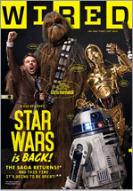

Colors:
Wired uses a mixture of dark and light greys and strong blues. Use of Colors for developers is specified in the CSS Components of the styleguide
Background-Colors: #000000#4d4d4d#ffffff
Font-Colors: #333333 #ffffff #000000 #007ca5 #00aeef #d3ad7f #999999
Example: Use of Colors in the Wired.com Comments Section
Wired Logo:
While the colors of theWired.com main logo are black and white, it comes in many different color variations. It can be used as such, as long as the signature look stays the same. The letters W, R and D must have different colored backgrounds. Up next are some Logo Variations used by and in context of Wired.com


Typography:
Wired uses a mixture of dark and light greys and strong blues. Use of Colors for developers is specified in the CSS Components of the styleguide
Money Problems
font-size: 12px;
font-family: calibre,calibre-1,calibre-2,brandon-grotesque,HelveticaNeue,Helvetica-Neue,Helvetica,arial,sans-serif;
text-transform: uppercase;
An Extortionist Has Been Making Life Hell for Bitcoin's Earliest Adopters
font-size: 34px;
font-family: periodico-text,periodico-text-1,periodico-text-2,"Exchange SSm 4r",HelveticaNeue,Helvetica-Neue,Helvetica,arial,sans-serif;
Autopia
font-size: 18px;
font-family: calibre,calibre-1,calibre-2,brandon-grotesque,HelveticaNeue,Helvetica-Neue,Helvetica,arial,sans-serif;
text-transform: uppercase;
The Most Innovative Cars of the Year
font-size: 12px;
font-family: "Helvetica Neue",Helvetica,Arial,sans-serif;